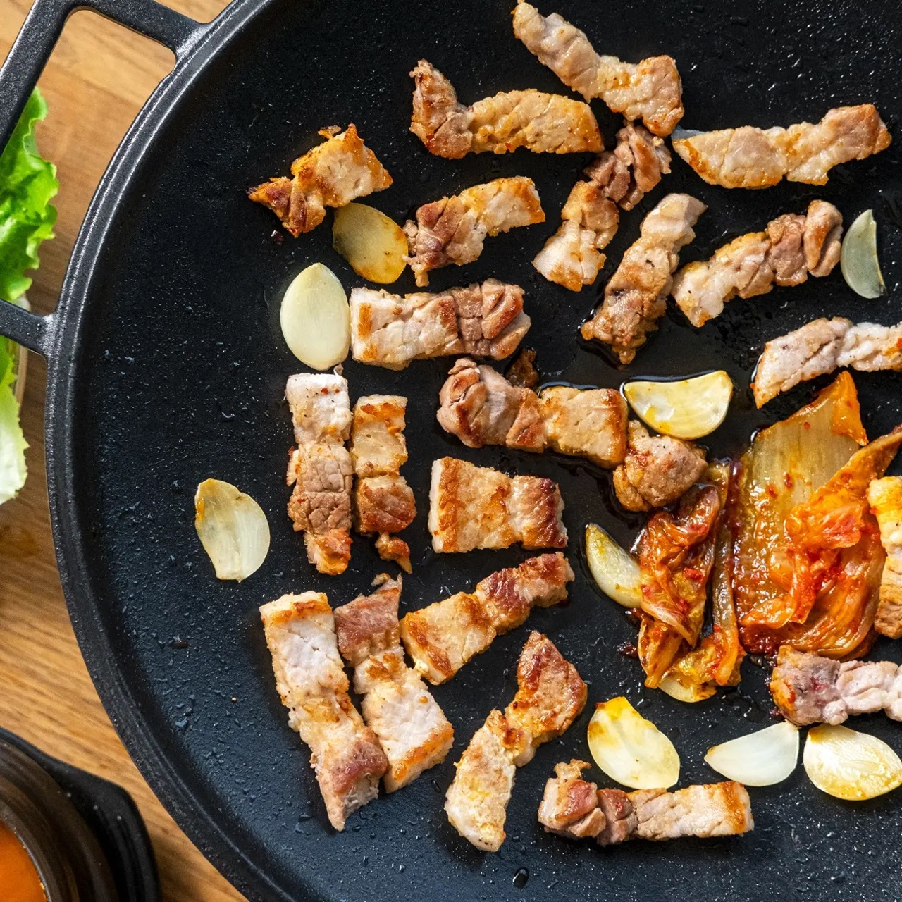

Samgupsal Recipe

Description
Korean BBQ dish with the most popular cut of pork
Ingredients
- Half pound sliced pork belly
- 2 cups Kimchi
- 1 cup Garlic
Steps
- Heat up pan and add the pork belly
- Cook the meat until one side is golden brown and flip it
- Once both sides of the pork belly are golden brown, cut the meat into bite size pieces
- Add the kimchi and garlic in the pan and cook them in the oil from the pork belly
- Enjoy!